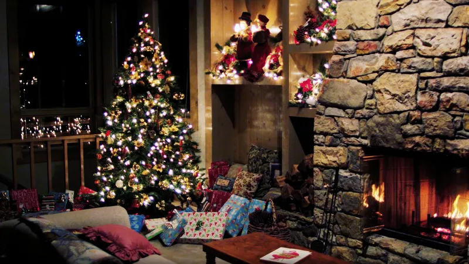
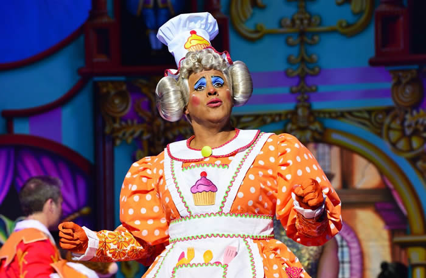

Christmas in the United Kingdom is a tapestry of traditions, customs, and festive cheer that have been passed down through generations. From the twinkling Christmas lights to the hearty Christmas dinner, these traditions bring families and friends together, creating warm memories that last a lifetime.
No Christmas in Britain is complete without the vibrant decorations that transform homes into festive wonderlands. The ubiquitous Christmas tree, adorned with twinkling lights and ornaments, stands as the centerpiece of the celebrations. Holly, ivy, and mistletoe are woven into wreaths, garlands, and arrangements, adding a touch of natural charm.
A British Christmas wouldn't be the same without the joyous spectacle of pantomime. These musical adaptations of classic fairytales, filled with slapstick humor, audience participation, and elaborate costumes, have enchanted generations of children and adults alike.
British Christmas cuisine is a symphony of flavors and textures, featuring a variety of traditional dishes. Christmas pudding, a rich, dense cake steeped in brandy and dried fruits, is a must-have on the festive table. Mince pies, filled with a sweet, spiced mixture, are a popular indulgence, often enjoyed with a cup of hot chocolate.

After the main Christmas feast, mince pies make a delightful encore. These small, sweet pastries, filled with dried fruits and spices, are often served with a glass of port or brandy. The spirit of Christmas continues with carols, stories, and games, creating a warm and cozy atmosphere.

The spirit of giving is central to British Christmas traditions. Children eagerly await the arrival of Santa Claus, who delivers presents under the Christmas tree, while adults exchange gifts among family and friends. Charitable giving is also a significant part of the season, as people support local causes and organizations that make a difference in their communities.

New Year's Eve brings a different kind of festive cheer, as people gather to bid farewell to the old year and welcome the new one. Parties, fireworks, and a rendition of the iconic song "Auld Lang Syne" mark the transition into the next year, filled with hope and anticipation for what lies ahead.

As the festive season draws to a close, the traditions of British Christmas continue to echo, reminding us of the warmth, kindness, and shared experiences that make this time of year so special. From the twinkling decorations to the hearty meals and the spirit of giving, these traditions weave a rich tapestry of Christmas memories that will be cherished for years to come.